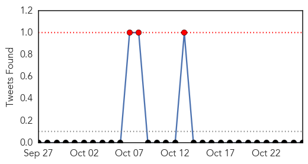

Swine Flu
30-Day Web Trend
2 alerts, 0 warnings
30-Day Twitter Trend
3 alerts, 0 warnings

Article Locations
Article Confidences

Top Articles:
Top Tweets:
-
No tweets found for Oct 26, 2015
Unknown
30-Day Web Trend
0 alerts, 0 warnings

30-Day Twitter Trend
2 alerts, 0 warnings

Article Locations

Article Confidences

Top Articles:
- 0.997
- 83 per cent of S Korea MERS cases originated from 5 'super spreaders'
- 0.982
- KBS World Radio
- 0.968
- Hospital says 1,300 patients may have been exposed to bacteria
- 0.968
- 1,300 former York Hospital patients may have been exposed to potentially fatal bacteria
- 0.943
- Shigella Outbreak: More cases reported outside of Santa Clara County
- 0.933
- Cluster of Nontuberculous Mycobacterium Infections Identified in WellSpan York Hospital Patients
- 0.926
- Shigella outbreak: Bay Area counties see an increase in shigella cases
- 0.917
- Chicago Tribune
- 0.917
- Chicago Tribune
- 0.917
- Chicago Tribune
- 0.917
- Chicago Tribune
- 0.917
- Chicago Tribune
- 0.917
- Chicago Tribune
- 0.917
- Chicago Tribune
- 0.917
- Chicago Tribune
- 0.916
- Flu shots for students stressed in West Virginia
- 0.915
- Pet Talk: Testing, vaccinations limit reach of feline leukemia
- 0.908
- Shigella outbreaks now at 141 suspected cases, 49 lab confirmed
- 0.881
- NY health officials deployed to Syracuse hospital after Legionella possibly found in water system
- 0.871
- Nevada health officials optimistic of fall break stopping the spread of norovirus in schools
- 0.869
- Nevada officials hope school break will stop norovirus
- 0.852
- Clinics gear up for 2015/2016 flu season
- 0.844
- Health Officials Look To Fall Break To Help Stop Norovirus Outbreak In Nevada Schools
- 0.829
- Additional 41 people Sickened with Shigella Linked to S.J....
- 0.804
- Public Health: Shigella Outbreak Spreads Into Marin
- 0.801
- Smilesandmiles's Travel Blog: Antananarivo, Madagascar
- 0.801
- Lyme disease report issued by Dept of Health
- 0.793
- Simpler method for measuring viral infections in bees
- 0.785
- Distemper virus found in Brunswick County wildlife; residents warned to watch pets
- 0.773
- Shigella bacteria outbreak grows to 182 people in six counties
- 0.744
- Simpler method for measuring viral infections in bees
- 0.736
- Answers to Karachi’s N fowleri challenge lie in climate change study
- 0.730
- Smilesandmiles's Travel Blog: Johannesburg, South Africa
- 0.730
- Trump says world would be a better place if Gaddafi, Saddam still ruled
- 0.730
- Ivory Coast presidential vote turnout ‘around 60 percent’
- 0.730
- Islamic State group blow up ancient Syrian Palmyra columns in execution
- 0.730
- Suspect detained after attack on Belgian army barracks
- 0.730
- French unemployment falls slightly in September
- 0.730
- Former comic wins Guatemala presidential runoff
- 0.730
- Air France ‘ripped-shirt’ boss tells his story
- 0.705
- WHO Experts Recommend Pilot Programs To Better Understand Use Of GSK’s Malaria Vaccine Among African Children
- 0.701
- St. Joseph's Hospital lifts water ban for Emergency Room
- 0.696
- Nearly Half of the Doctors in U.S. Not Routinely Recommending HPV Vaccine
- 0.689
- The role of health care in State-Building for #Somalia
- 0.679
- How Hospitals Coddle the Rich
- 0.677
- Flu shot now available in Waterloo Region
- 0.672
- Spray away your child's winter blues with free flu vaccine
- 0.672
- CDC in Ohio to study fentanyl, heroin overdoses
- 0.642
- National flu immunisation programme for under-fives begins
- 0.641
- Asia and the Pacific: Weekly Regional Humanitarian Snapshot (20 - 26 October 2015) - Philippines
Showing top 50 articles...
Top Tweets:
- 0.742
- So there is a MERS hospital outbreak in Hufoof, KSA. 2 cases today, both caught in hospital. 1 is a health worker. https://t.co/vyLA0axCdo
- 0.604
- RT: 🙌 No intentes ponerle la mano a lo que ya dejaste en manos de Dios.
- 0.569
- RT: El gobierno trata bien al pueblo semanas antes de elecciones, saben por que? Porque funciona, en esta mierda la gente es fe…